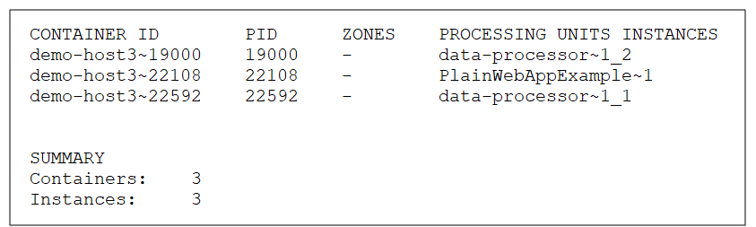
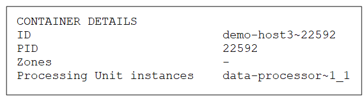

To view the general container details:
List all containers
Command:
xap container listor insightedge container list
Description:
This command lists all the containers on the current host.
Input Example:
Output Example:

Parameters and Options:
None
List container details
Command:
xap container info <container ID> or inisghtedge container info <container ID>
Description:
This command lists the container ID, Process ID, zones, and Processing Unit instances for the specified container.
Input Example:
Output Example:

Parameters and Options:
| Item | Name | Description |
|---|---|---|
| Parameter | Container ID | Provide the ID of container for which you want to see the details. |
List all containers
Path
GET /containers
Description:
This option lists all the containers in the Processing Unit instances.
Example Request:
curl -X GET --header 'Accept: application/json' 'http://localhost:8090/v2/containers'
Example Response:
[
{
"id": "admin~13972",
"pid": 13972,
"zones": [],
"instances": [
"alertSpace~1",
"monitorSpace~1"
]
}
]
Options:
None.
List container details
Path
GET /containers{id}
Description:
This option lists the container ID, Process ID, zones, and Processing Unit instances for the specified container.
Example Request:
curl -X GET --header 'Accept: application/json' 'http://localhost:8090/v2/containers/admin~13972'
Example Response:
{
"id": "admin~13972",
"pid": 13972,
"zones": [],
"instances": [
"alertSpace~1",
"monitorSpace~1"
]
}
Options:
| Option | Description | Required |
|---|---|---|
| containerId | Provide the ID of the Processing Unit instance for which you want to see the container details. | Yes |
List JVM details for a specific container
Path
GET /containers{id}/details/jvm
Description:
This option lists the JVM details for the specified container.
Example Request:
curl -X GET --header 'Accept: application/json' 'http://localhost:8090/v2/containers/admin~13972/details/jvm'
Example Response:
{
"startTime": 1521364936818,
"jmxUrl": "service:jmx:rmi:///jndi/rmi://admin:10101/jmxrmi",
"vmName": "Java HotSpot(TM) 64-Bit Server VM",
"vmVersion": "1.8.0_45",
"vmVendor": "Oracle Corporation",
"pid": 13972,
"inputArguments": [
"-XX:+AggressiveOpts",
"-XX:+HeapDumpOnOutOfMemoryError",
"-Xms512m",
"-Xmx512m",
"-DagentId=3",
"-DgsaServiceID=a22de474-c56a-4331-a068-356d14bd69df",
"-DenableDynamicLocators=",
"-Djava.util.logging.config.file=C:\\GigaSpaces\\gigaspaces-insightedge-12.3.0-rc2-b18924\\config\\log\\xap_logging.properties",
"-Djava.security.policy=C:\\GigaSpaces\\gigaspaces-insightedge-12.3.0-rc2-b18924\\policy\\policy.all",
"-Djava.rmi.server.hostname=ADMIN",
"-Dcom.gs.home=C:\\GigaSpaces\\gigaspaces-insightedge-12.3.0-rc2-b18924"
],
"bootClassPath": "C:\\Program Files\\Java\\jdk1.8.0_45\\jre\\lib\\resources.jar;C:\\Program Files\\Java\\jdk1.8.0_45\\jre\\lib\\rt.jar;C:\\Program Files\\Java\\jdk1.8.0_45\\jre\\lib\\sunrsasign.jar;C:\\Program Files\\Java\\jdk1.8.0_45\\jre\\lib\\jsse.jar;C:\\Program Files\\Java\\jdk1.8.0_45\\jre\\lib\\jce.jar;C:\\Program Files\\Java\\jdk1.8.0_45\\jre\\lib\\charsets.jar;C:\\Program Files\\Java\\jdk1.8.0_45\\jre\\lib\\jfr.jar;C:\\Program Files\\Java\\jdk1.8.0_45\\jre\\classes",
"classPath": ";C:\\GigaSpaces\\gigaspaces-insightedge-12.3.0-rc2-b18924;C:\\GigaSpaces\\gigaspaces-insightedge-12.3.0-rc2-b18924\\lib\\optional\\sigar\\sigar.jar;;C:\\GigaSpaces\\gigaspaces-insightedge-12.3.0-rc2-b18924\\lib\\required\\xap-common.jar;C:\\GigaSpaces\\gigaspaces-insightedge-12.3.0-rc2-b18924\\lib\\platform\\service-grid\\xap-service-grid-boot.jar;",
"memoryHeapInitInBytes": 536870912,
"memoryHeapMaxInBytes": 514850816,
"memoryNonHeapInitInBytes": 2555904,
"memoryNonHeapMaxInBytes": -1,
"systemProperties": {
"com.gigaspaces.grid.gsc.home": "C:\\Users\\hp\\.gigaspaces",
"java.io.tmpdir": "C:\\Users\\hp\\AppData\\Local\\Temp\\",
"com.gs.jini_lus.groups": "xap-12.3.0",
"line.separator": "\r\n",
"com.j_spaces.core.container.shutdown_hook": "false",
"agentId": "3",
"path.separator": ";",
"sun.management.compiler": "HotSpot 64-Bit Tiered Compilers",
"sun.cpu.endian": "little",
"user.script": "",
"java.specification.version": "1.8",
"java.vm.specification.name": "Java Virtual Machine Specification",
"com.gs.manager.rest.url": "http://localhost:8090",
"java.vendor": "Oracle Corporation",
"java.vm.specification.version": "1.8",
"user.home": "C:\\Users\\hp",
"file.encoding.pkg": "sun.io",
"com.gigaspaces.grid.groups": "gs-grid",
"sun.arch.data.model": "64",
"sun.boot.library.path": "C:\\Program Files\\Java\\jdk1.8.0_45\\jre\\bin",
"user.dir": "C:\\GigaSpaces\\gigaspaces-insightedge-12.3.0-rc2-b18924\\bin",
"com.gigaspaces.lib.platform": "C:\\GigaSpaces\\gigaspaces-insightedge-12.3.0-rc2-b18924\\lib\\platform\\",
"com.gs.embedded-services.httpd.enabled": "false",
"com.gigaspaces.lib.opt": "C:\\GigaSpaces\\gigaspaces-insightedge-12.3.0-rc2-b18924\\lib\\optional\\",
"java.library.path": "C:\\Program Files\\Java\\jdk1.8.0_45\\bin;C:\\Windows\\Sun\\Java\\bin;C:\\Windows\\system32;C:\\Windows;C:\\oracle\\product\\11.1.0\\db_1\\bin;C:\\Program Files\\SlikSvn\\bin;C:\\Program Files\\Java\\jdk1.8.0_45\\bin;C:\\Windows\\system32;C:\\Windows;C:\\Windows\\System32\\Wbem;C:\\Windows\\System32\\WindowsPowerShell\\v1.0\\;c:\\tools\\hugo;C:\\Program Files (x86)\\Git\\cmd;C:\\Program Files (x86)\\Microsoft SQL Server\\100\\Tools\\Binn\\;C:\\Program Files (x86)\\Microsoft SQL Server\\100\\DTS\\Binn\\;C:\\tools\\hugo;C:\\tools\\apache-maven-3.5.0\\bin;C:\\Program Files (x86)\\AdminStudio\\2015\\Common\\;C:\\Program Files\\TortoiseSVN\\bin;C:\\Program Files\\SlikSvn\\bin;C:\\Program Files (x86)\\QuickTime\\QTSystem\\;C:\\Windows\\system32\\config\\systemprofile\\.dnx\\bin;C:\\Program Files\\Microsoft DNX\\Dnvm\\;C:\\Program Files\\MIT\\Kerberos\\bin;C:\\Program Files (x86)\\Skype\\Phone\\;C:\\Program Files\\Microsoft SQL Server\\Client SDK\\ODBC\\130\\Tools\\Binn\\;C:\\Program Files (x86)\\Microsoft SQL Server\\130\\Tools\\Binn\\;C:\\Program Files\\Microsoft SQL Server\\130\\Tools\\Binn\\;C:\\Program Files\\Microsoft SQL Server\\130\\DTS\\Binn\\;C:\\Program Files\\PuTTY\\;C:\\Users\\hp\\AppData\\Local\\GitHubDesktop\\bin;C:\\GigaSpaces\\gigaspaces-insightedge-12.3.0-rc2-b18924\\lib\\platform\\native;C:\\GigaSpaces\\gigaspaces-insightedge-12.3.0-rc2-b18924\\lib\\platform\\native;.",
"sun.cpu.isalist": "amd64",
"sun.desktop": "windows",
"com.gigaspaces.lib.opt.security": "C:\\GigaSpaces\\gigaspaces-insightedge-12.3.0-rc2-b18924\\lib\\optional\\security",
"os.arch": "amd64",
"java.vm.version": "25.45-b02",
"com.gs.jmx.enabled": "true",
"java.endorsed.dirs": "C:\\Program Files\\Java\\jdk1.8.0_45\\jre\\lib\\endorsed",
"java.runtime.version": "1.8.0_45-b15",
"java.util.logging.config.file": "C:\\GigaSpaces\\gigaspaces-insightedge-12.3.0-rc2-b18924\\config\\log\\xap_logging.properties",
"java.vm.info": "mixed mode",
"java.ext.dirs": "C:\\Program Files\\Java\\jdk1.8.0_45\\jre\\lib\\ext;C:\\Windows\\Sun\\Java\\lib\\ext",
"user.variant": "",
"java.runtime.name": "Java(TM) SE Runtime Environment",
"file.separator": "\\",
"com.gigaspaces.lookupfinder.actualclose": "false",
"java.class.version": "52.0",
"com.gigaspaces.system.registryPort": "10101",
"java.specification.name": "Java Platform API Specification",
"sun.boot.class.path": "C:\\Program Files\\Java\\jdk1.8.0_45\\jre\\lib\\resources.jar;C:\\Program Files\\Java\\jdk1.8.0_45\\jre\\lib\\rt.jar;C:\\Program Files\\Java\\jdk1.8.0_45\\jre\\lib\\sunrsasign.jar;C:\\Program Files\\Java\\jdk1.8.0_45\\jre\\lib\\jsse.jar;C:\\Program Files\\Java\\jdk1.8.0_45\\jre\\lib\\jce.jar;C:\\Program Files\\Java\\jdk1.8.0_45\\jre\\lib\\charsets.jar;C:\\Program Files\\Java\\jdk1.8.0_45\\jre\\lib\\jfr.jar;C:\\Program Files\\Java\\jdk1.8.0_45\\jre\\classes",
"file.encoding": "Cp1252",
"sun.rmi.dgc.client.gcInterval": "36000000",
"com.gigaspaces.system.jmxServiceURL": "service:jmx:rmi:///jndi/rmi://admin:10101/jmxrmi",
"user.timezone": "Africa/Harare",
"sun.rmi.dgc.server.gcInterval": "36000000",
"com.gs.work": "C:\\GigaSpaces\\gigaspaces-insightedge-12.3.0-rc2-b18924\\work",
"java.specification.vendor": "Oracle Corporation",
"sun.java.launcher": "SUN_STANDARD",
"os.version": "6.3",
"sun.os.patch.level": "",
"java.vm.specification.vendor": "Oracle Corporation",
"com.gigaspaces.gsc.running": "true",
"user.country": "GB",
"sun.jnu.encoding": "Cp1252",
"com.gs.deploy": "C:\\GigaSpaces\\gigaspaces-insightedge-12.3.0-rc2-b18924\\deploy",
"com.gigaspaces.lib": "C:\\GigaSpaces\\gigaspaces-insightedge-12.3.0-rc2-b18924\\lib\\",
"com.gs.jini_lus.locators": "localhost",
"com.gs.jmx.createJmxConnetor": "false",
"user.language": "en",
"com.gs.start-embedded-lus": "false",
"enableDynamicLocators": "",
"spark.home": "C:\\GigaSpaces\\gigaspaces-insightedge-12.3.0-rc2-b18924\\insightedge\\spark",
"java.vendor.url": "http://java.oracle.com/",
"java.rmi.server.hostname": "admin",
"java.awt.printerjob": "sun.awt.windows.WPrinterJob",
"com.gs.home.fwd-slash": "C:/GigaSpaces/gigaspaces-insightedge-12.3.0-rc2-b18924",
"java.awt.graphicsenv": "sun.awt.Win32GraphicsEnvironment",
"com.gs.home": "C:\\GigaSpaces\\gigaspaces-insightedge-12.3.0-rc2-b18924\\",
"awt.toolkit": "sun.awt.windows.WToolkit",
"com.gs.localhost.name": "admin",
"java.class.path": ";C:\\GigaSpaces\\gigaspaces-insightedge-12.3.0-rc2-b18924;C:\\GigaSpaces\\gigaspaces-insightedge-12.3.0-rc2-b18924\\lib\\optional\\sigar\\sigar.jar;;C:\\GigaSpaces\\gigaspaces-insightedge-12.3.0-rc2-b18924\\lib\\required\\xap-common.jar;C:\\GigaSpaces\\gigaspaces-insightedge-12.3.0-rc2-b18924\\lib\\platform\\service-grid\\xap-service-grid-boot.jar;",
"gsaServiceID": "a22de474-c56a-4331-a068-356d14bd69df",
"java.protocol.handler.pkgs": "net.jini.url",
"os.name": "Windows 8.1",
"com.gigaspaces.lib.required": "C:\\GigaSpaces\\gigaspaces-insightedge-12.3.0-rc2-b18924\\lib\\required\\",
"java.security.policy": "C:\\GigaSpaces\\gigaspaces-insightedge-12.3.0-rc2-b18924\\policy\\policy.all",
"java.vm.vendor": "Oracle Corporation",
"com.gs.licensekey": "Product=InsightEdge;Version=12.3;Type=ENTERPRISE;Customer=evaluation;Expiration=2018-Apr-03;Hash=SP3QPJPWOORObPL6VQNO",
"gs.logFileName": "gsc_3",
"java.vendor.url.bug": "http://bugreport.sun.com/bugreport/",
"user.name": "hp",
"org.jini.rio.home": "C:\\Users\\hp\\.gigaspaces",
"org.jini.rio.qos.native": "C:\\GigaSpaces\\gigaspaces-insightedge-12.3.0-rc2-b18924\\lib\\platform\\native",
"java.vm.name": "Java HotSpot(TM) 64-Bit Server VM",
"sun.java.command": "com.gigaspaces.start.SystemBoot services=GSC",
"java.home": "C:\\Program Files\\Java\\jdk1.8.0_45\\jre",
"java.version": "1.8.0_45",
"sun.io.unicode.encoding": "UnicodeLittle"
},
"environmentVariables": {
""
"Options:
| Option | Description | Required |
|---|---|---|
| containerId | Provide the ID of the container for which you want to see the JVM details. | Yes |
List transport details for a specific container
Path
GET /containers{id}/details/transport
Description:
This option lists transport details, such as port and thread information, for the specified container.
Example Request:
curl -X GET --header 'Accept: application/json' 'http://localhost:8090/v2/containers/admin~13972/details/transport'
Example Response:
{
"hostAddress": "172.20.3.93",
"hostName": "admin",
"bindHost": "admin",
"port": 51469,
"minThreads": 1,
"maxThreads": 128,
"isSslEnabled": false
}
Options:
| Option | Description | Required |
|---|---|---|
| containerId | Provide the ID of the container for which you want to see the transport details. | Yes |
List JVM statistics for a specific container
Path
GET /containers{id}/statistcis/jvm
Description:
This option lists the JVM statistics for the specified container.
Example Request:
curl -X GET --header 'Accept: application/json' 'http://localhost:8090/v2/containers/admin~13972/statistics/jvm'
Example Response:
{
"timestamp": 1521376850952,
"uptime": 11914185,
"memoryHeapCommittedInBytes": 523763712,
"memoryHeapUsedInBytes": 75691760,
"memoryNonHeapCommittedInBytes": 63700992,
"memoryNonHeapUsedInBytes": 62009552,
"threadCount": 118,
"peakThreadCount": 146,
"gcCount": 21,
"gcTime": 290
}
Options:
| Option | Description | Required |
|---|---|---|
| containerId | Provide the ID of the container for which you want to see the JVM statistics. | Yes |
List transport statistics for a specific container
Path
GET /containers{id}/statistcis/transport
Description:
This option lists the tranport statistics, such as completed tasks and thread information, for the specified container.
Example Request:
curl -X GET --header 'Accept: application/json' 'http://localhost:8090/v2/containers/admin~13972/statistics/transport'
Example Response:
{
"timestamp": 1521376929557,
"completedTaskCount": 19294,
"completedTaskPerSecond": 0.000012682590109740723,
"activeThreadsCount": 0,
"activeThreadsPerc": 0,
"queueSize": 0
}
Options:
| Option | Description | Required |
|---|---|---|
| containerId | Provide the ID of the container for which you want to see the transport statistics. | Yes |
The Hosts view provides general overview of the containers that are running in the
For a description of the other information displayed in the Hosts view, see the Viewing Host Information topic.
| Item | Description |
|---|---|
| Grid Service Container | |
| Name | Name of the GSC. |
| CPU | Indicator of how much CPU is being used, in %. |
| Used Heap (MB) | Indicator of how much heap memory the GSC is utilizing, in both MB and %. |
| Threads | How many threads the GSC has open. |
| Processing Units | Processing Units and number of Processing Unit instances being hosted by the GSC. |
| Primaries & Backups | Processing Unit instances being hosted by the GSC, according to primary and backup status. |
| Grid Service Manager/Lookup Service | |
| Name | Name of the container. |
| CPU | Indicator of how much CPU is being used, in %. |
| Used Heap (MB) | Indicator of how much heap memory the container is utilizing, in both MB and %. |
Refer to the GigaSpaces Management Center topics in the Administration section.
Refer to the Admin API topics in the Developer Guide.